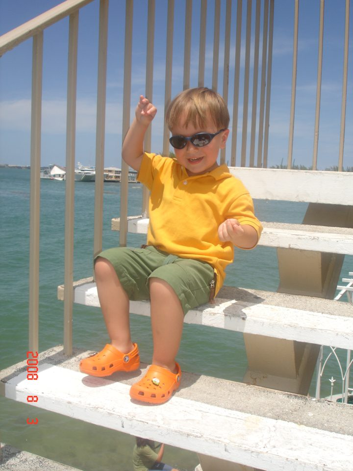

Behind the portfolio
How I got here

I grew up in Bogotá, Colombia. In my after-school robotics club we built small circuits and small robots, and the best part was that they actually worked. I was hooked.
By then I was the unofficial IT department of my classroom, the kid teachers called whenever something broke. One day my dad took me to work, and I told everyone there that I loved computers. The IT team gave me an old laptop, probably hoping I would learn something from it. I was about seven, and I was so excited to finally see what a computer looks like on the inside that I took it completely apart without once wondering how it would go back together. It didn’t. I think they had to throw it away.
It turns out I never stopped. At Davidson I’m building a RISC-V processor on an FPGA, which is taking a computer apart all over again, except this time I’m putting it back together on purpose.
What I carry with me
Things that might surprise you
I speak French. I use AI every day and I’m still wary of it.
On repeat, on the nightstand
I always read two books at a time, because there is so much to read and so little life to read it in. And when I listen to music, I just listen, with nothing else going on: boleros, jazz and classical.